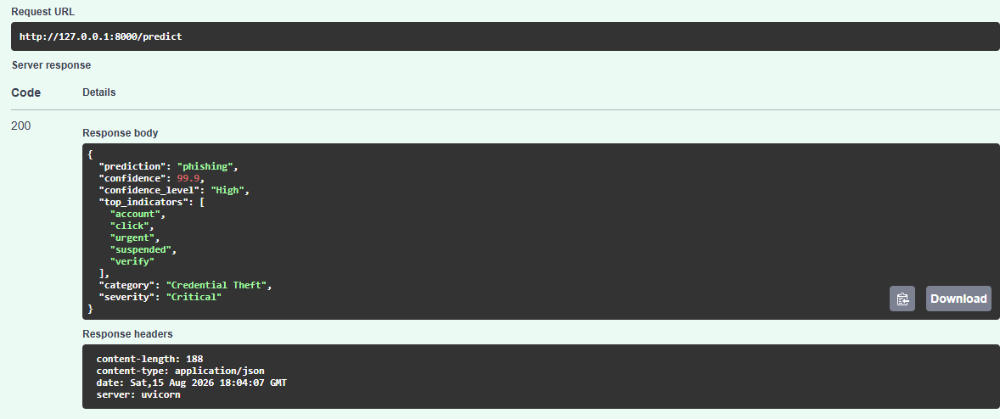
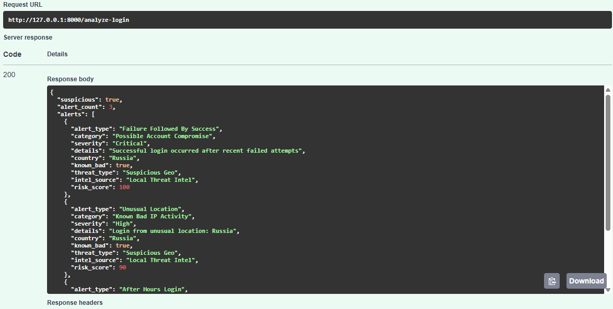
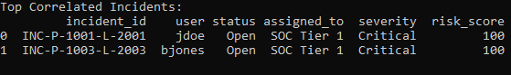
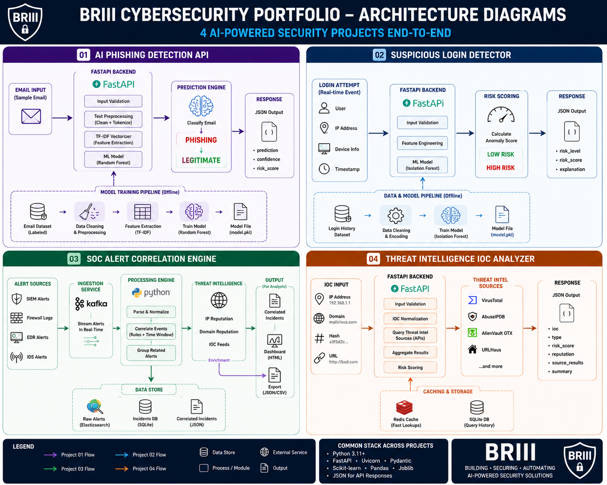

Programming
Python, SQL, PowerShell
Cybersecurity • AI Security • Detection Engineering
I build cybersecurity solutions using Python, FastAPI, Docker, machine learning, threat intelligence, and security automation.
About
I am a cybersecurity professional focused on building practical detection, investigation, and security automation solutions.
My projects cover email security, identity protection, SOC alert correlation, threat intelligence, API development, and containerized security services.
Skills
Python, SQL, PowerShell
Detection Engineering, SOC Operations, Threat Intelligence, Incident Response
FastAPI, REST APIs, Docker, Pandas, Scikit-learn
Microsoft Azure and Google Cloud Platform
Projects
01
Machine-learning phishing classifier with explainable indicators, confidence scoring, severity levels, authentication, logging, and Docker support.

Live API analysis — phishing detected with 99.9% confidence, explainable indicators, credential-theft classification, and Critical severity.
02
Identity threat detection service that finds brute-force activity, unusual locations, after-hours access, and possible account compromise.

Live login analysis — three correlated alerts including Critical account compromise, suspicious geolocation, threat-intelligence enrichment, and risk scoring.
03
Correlates phishing and login alerts into incidents with case ownership, severity, risk scoring, and analyst actions.

Correlation engine output — multiple security alerts combined into Critical incidents with Risk Score 100, SOC Tier 1 assignment, case status, and recommended analyst actions.
04
Enriches IP addresses, domains, and file hashes with reputation, confidence, severity, risk scoring, and response recommendations.

Live IOC enrichment — malicious Tor exit node identified with 95% confidence, Critical severity, Risk Score 100, and recommended SOC response actions.
Security Architecture
These projects demonstrate an end-to-end security workflow spanning phishing detection, identity monitoring, SOC alert correlation, threat intelligence enrichment, risk scoring, and analyst response.

BRIII Security Architecture — four practical security projects covering detection, investigation, correlation, enrichment, and response. Click the diagram to view it full size.
Certifications
AZ-500 Professional Certificate
Professional Certificate
Professional Certificate
Technical training and certificates